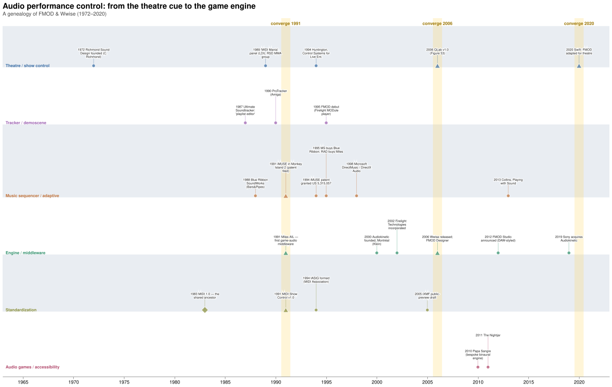

Critique
Problems with the pipeline
- Timelines aren't playtime. The perception persists that timelines are easier than cyclic playtime — but the fixed-medium timeline mindset, useful for replicable data (annotation, reference), is wrong for user experience. Linear time is also ethnocentric.
- Middleware nudges students to specialize in audio — underpaid — and separates them from the interactive logic of the games they score.
- GUIs impair software-architecture awareness, blocking access to transferable and generalizable tools.
- The sequence ranks teachers above learners — it artificially places instructors ahead of students in a linear development process.

Problems from the talk notes; figure from the background study (drawn from
timeline_data.json in this room's source material).